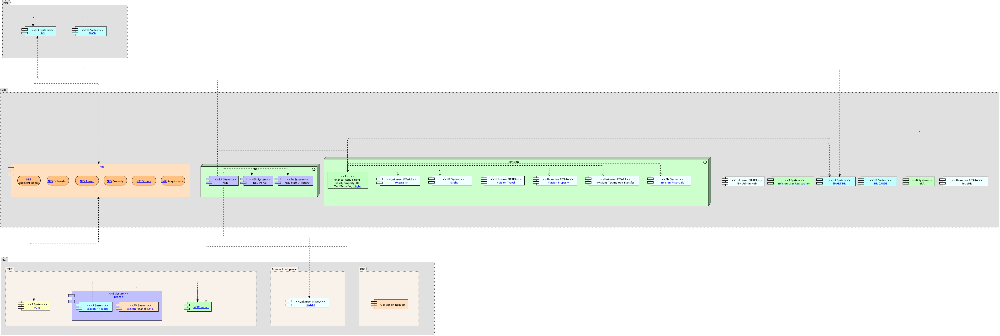

|
|
|
ArchiMate Diagram - OBF systems map
 link
link
| Jump to: |
|  |
| Model Elements |
| Name | Description | |||
|
|
||||
|
|
Provides HR information for NIH and OHR staff that is accessible by NIH single-sign-on. Sections may include awards, employee relations, labor relations, HR systems, and more. |
|||
|
|
|
|||
|
|
||||
|
|
HHS Learning Portal (LMS) – Place to search for HHS instructional class.
Owner - HHS |
|||
|
|
Electronic Research Administration(ERA) – Serves applications and the extramural research community. IT infrastructure to manage the receipt, processing ,review award and monitoring of research and non-research grants. Supports the full life cycle of grants administration. Also support other gov agency. eRA systems, including eRA Commons, ASSIST and IMPAC II modules. eRA integrates systems, including eRA Commons, ASSIST and IMPAC II modules
User guides docs - https://era.nih.gov/modules_user-guides_documentation.cfm
Frequently asked question - https://era.nih.gov/commons/faq_commons.cfm#I1 |
|||
|
|
NCiConnect
is a purpose-built suite of COTS products selected to perform specified
functions in an integrated way. It is designed to be re-used over and
over to provide a continual stream of new solutions supporting
administrative processes, information and decision making, policy and
guidance and communication.
NCiConnect
was purpose built to directly support administrative operations in the
following way
Central
location for policy/guidelines/delegations bundled with associated
electronic workflows and supporting reports to provide a complete
resource to conduct business electronically
·
Single
place to adjust for changing policies, procedures and organizational
structure in real time
·
Platform
to announce changes to general and targeted user audiences.
·
Home
for on-line training and user support resources including a help desk.
·
Using
this we can
o
substantially
reduce time spent performing administrative functions
o
Provide
a source of metrics on administrative activities
o
Apply
role-based provisioning so the same site can be used to support numerous
audiences and purposes
Improving
administrative operations through application of modern information
technology resources is achieved focusing on three primary functional
areas within NCiConnect;
·
Process
Automation
·
Content
Management
·
Advanced
Analytics and Reporting
The
platform is designed to bundle these together. Site provisioning is
used so the same platform can be used to provide new tools and resources
to meet specific needs of all audiences.
It
is important to note that NCiConnect
is strictly an intranet resource. Only those with NIH PIV cards
can access it. And then within the site, only the spaces they have been
provisioned to see.
NCiConnect
uses Microsoft Dynamics and K2 Black Pearl to build automated workflows
to perform the following functions;
·
Provide
a means to electronically route, track and save administrative packages
·
Replacing
paper forms with digital forms
·
Autofill
forms where possible
·
Leverage
role-based provisioning
·
Email
notification and “in-box” dashboard for managing action items
·
Process
actions on mobile devices
·
Generate
alerts and notifications
·
Archiving
completed packages
·
Enforce
business rules
·
Provide
metrics on compliance, timing, number of actions, etc.
·
Web-based
– access from anywhere
·
Couple
necessary guidance, delegations, forms and with the workflow
·
Ensures
even a new staff member can correctly complete an action correctly the
first time
·
Provide
a central place to update policy, delegations, guidance and forms so the
very next package is correct
Microsoft
SharePoint
is used to provide our intranet environment employing role-based
provisioning across the site collection.
·
Central
place for policy, guidance, delegations of authority and associated
forms
·
Provisioned
home to post automated workflows, policy/delegations/forms and
dashboards and analytics
·
Alerts,
announcement and news arranged and provisioned to targeted groups
·
Dynamic
calendars of important dates
·
Place
to house and organize all other web tools, reports and systems hyperlinks
·
Tagged
content with Google-like search capabilities
·
Embedded
automated workflows and dashboards to monitor the status of actions
·
Embedded
metrics and reports
·
Dedicated
content management support to ensure what is on site is current and
accurate, links are active, etc.
·
Build
and facilitate ongoing partnerships with our business owners providing
support, project management, change management and development support
for NCiConnect
projects.
Incorporate
QlikView, SSRS and other custom dashboards co-located with reports and
analytical tools created by others.
·
Dynamic
graphical reports for data used often
·
Consolidated
data from almost any source with automatic loads and dedicated support
·
On
screen filter/drill through capability to see data at any granularity
·
Ability
to share and distribute reports
·
User
provisioning to control access to data and reports
·
Filter,
sort and drill through data on the fly
·
User
training provided
·
Dedicated
help desk to maintain reports
·
Standardized/normalized
data
·
No
need for you to query, consolidate and format data if we can build a
report for you
Provides the following dashboards and reports to the NCI:
Provides the following Production Application Sites
|
|||
|
|
Purchasing Online Tracking System
(POTS) - is an electronic purchase request submission,
approval, and tracking system based on NIH internal paper requistion of
1861 form.https://ccrod.cancer.gov/confluence/display/OMIT/POTS
1.
Search
Order – can search by POTS ID, CAN, Requester Last Name,
PA Name, CCH Name, Vendor Name, Fiscal Year, Requestition Number, Order
No, Catalog # NBS Types, NBS Status Creditcard Number, Custodial Code,
Order Status, sole Source Order, emergency Order, Order Type, Division
and inactive Divisions.
2.
Requester
– Tab to submit new orders, Search my Orders, Messages and
Reports. Reports is a fiscal Year summary report.
3.
Vendors
– Search list of vendors, my vendors and add a vendor
4.
NIANDS(Got
wrong) [SR([1] hosts,
Bob’s group supports.
[SR([1]Again
my handwriting fails me. |
|||
|
|
||||
|
|
||||
|
|
Status of Funds Internet Edition - known as SOFiE, is a web-based tool for providing advanced financial reporting and analysis functionality to government clients. It is the favored tool among administrative staff for financial reporting and tracking. SOFiE gives organizations distributed budgeting and planning tools, custom budget category views, drill-downs for detailed spending analysis, and a powerful Excel interface. SOFiE's Excel interface allows for the development of spreadsheets using custom functions that extract real-time expenditure, budget, and planning data from the SOFiE databases.
Excel interfaces -https://ccrod.cancer.gov/confluence/display/OMIT/Shared+SoFie+Excel+Spreadsheets
Owner - NCI |
|||
|
|
Employee
Database Internet Edition(Edie)
- is a web based application that allows NCI to accurately
maintain individual employee, contractor, and volunteer information, as
well as plan for, monitor, and report on workforce staffing levels. With EDie,
users can update employee information quickly and easily, while also
having the ability to view the official records at any time. EDiE
blends official NIH employee and payroll information with Institute
specific staffing knowledge to deliver the most accurate and complete
Fiscal Year FTE and Cost projections available. The suite of ready to
run reports included with the system can be supplemented with additional
custom reports as well as user defined reports generated via the new Ad
Hoc Report builder.EDiE
was developed by Netcomm and is administered at NCI by the ITRC. https://ccrod.cancer.gov/confluence/display/OMIT/EDiE
Link to data dictionary http://edie.netcomm.net/help/help.asp?tID=169
Owner
- NCI
|
|||
|
|
||||
|
|
||||
|
|
||||
|
|
||||
|
|
NBS is an integrated acquisition, logistics, travel and core financial management system that combines NIH administrative processes and financial information under one centralized component. The scope of the NBS includes the following business or "functional" areas: Financial Management, Property Management, Accounts Payable, Acquisition, Service and Supply Funds Operations, Supply Management, and Travel Management. |
|||
|
|
SMARTHR – increases efficiency in the use of NIH resources and automates specialized reporting tasks performed by OHR. SMARTHR also provides the unique ability to bridge reporting gaps across multiple Human Resource (HR) and non-HR systems. By linking disparate data-sources, SMARTHR promotes a more complete assessment of the organization and human capital topics, while facilitating on-demand business intelligence to OHR and IC customers alike. managed by OHR HR Systems Support Helpdesk
Sources
|
|||
|
|
HR Classification and Recruitment Document System – The Human Resources Classification and Recruitment Documents System (HR CARDS) is NIH’s web-based library that contains standard classified Position Descriptions (PDs) and associated classification and recruitment documents. HR CARDS is instrumental in aiding HR specialists, administrative personnel and managers to recruit top-notch talent by standardizing, streamlining, and expediting the classification and recruitment process. The use of HR CARDS is a key factor for meeting the 80-day hiring reform model as instructed by President Obama’s May 11, 2010 memorandum, Improving the Federal Recruitment and Hiring Process because it reduces the length of time it takes an HR specialist to post a job vacancy announcement. Allows searching of documents by Pay Plan, Series, Grade, position title. Document are position descriptions, Job analyses and Assessment
System link - http://hrcards.nih.gov/ |
|||
|
|
||||
|
|
NIHStaff Directory - Search page for NED. This is a duplicate of NED, It is being left on the diagram because some users may know NED as NIH Staff Directory. For more information see NED.
Owner - NIH
System Link - https://ned.nih.gov/search/ |
|||
|
|
NED Portal - Allows updating of Employee updating of NED records.
Owner - NIH
System Link - https://nedportal.nih.gov/ProcessPortal/dashboards/NED/PIV+NED+Welcome+CS/NED_03_10_2017?isScoreboard=false |
|||
|
|
The NIH Enterprise Directory (NED) - is a centrally coordinated, electronic directory containing identity, contact, and organizational information for all members of the NIH workforce and non-NIH staff using NIH services and facilities. NEDWeb is the custom data content and process management application used by NIH administrative personnel for adding new people to NED, updating existing records, transferring people between ICs, and deactivating people when they leave NIH. NEDWeb is also used for authorizing NIH "services" such as ID badges, Library privileges, Active Directory accounts, Exchange mailboxes, VPN Remote access, parking permits, and listing in the NIH Telephone and Services Directory. NEDWeb provides the following features and capabilities:
This document provides detailed information on the use of NEDWeb and is intended to serve as a reference guide for system users. Please direct comments or suggestions to ned@mail.nih.gov.
System link - https://nedportal.nih.gov/ProcessPortal/dashboards/NED/PIV+NED+Welcome+CS/NED_03_10_2017?isScoreboard=false
|
|||
|
|
||||
|
|
nSight – The nVision nSight HR application is a workforce planning and analytics application that will allow ICs to track, manage and plan their staffing needs for all staff types using a web based enterprise application while maintaining enterprise standards. nSight provides a full picture of an IC’s workforce which enables the planning and management of personnel, including tracking different types of staff and forecasting future staffing needs. In addition, nSight provides
System link - https://ccrod.cancergov/confluence/display/OMIT/nSight |
|||
|
|
nVision Financials – Consolidated and integrated financial reporting system which facilitates data-driven decision making. Offers valuable metrics and key performance indicators. Analysis and forecasting of costs budgeting, tracking obligations, accruals, disbursements for specific doc, oversee funding movement and control, track spending for funding initiatives, track spending by object class code (travel, payroll)
Sources
|
|||
|
|
nVision HR – Consolidated and integrated HR reporting. Facilitates data driven decision making. Create and share customized reports for FTE and non-FTE staff including personnel costs, FTE usage, aggregated workforce demographics, status of personnel actions, fellowship costs and status. NED tracking history movement within directory system from org to org. Provides Complete staff picture for each IC, develop custom reports, track all staff(contractors, FTEs Fellows), export to PDF, ability to create planning records to project future needs, dashboards and alerts.
Sources
|
|||
|
|
nVision property – Used to track and monitor decaled and un-decaled property, research decal numbers, monitor loans and passes and manage disposal of assets. Pre-defined and adhoc reporting.
Reports
Sources NBS Sunflower. Updated nightly. |
|||
|
|
nVision Travel – Captures data for NIH staff travel and provides reports and dashboards.
Reports
Sources – not listed directly had to pull from reading. NBS, CGE, NED, ITAS, Fellows??, BIIS??
Notes - CGE, Fellows and BIIS not linked yet
|
|||
|
|
nVisions Technology transfer – Supports technology transfer reporting needs on inventions, licenses and patents. Intended for Technology Development Coordinators (TDC) and Budget Officers. Tracks invention history (status of patents and licenses), Monitors progress of invention through the license and patent process, Identifies maintenance payment schedules for a specific ICs patents.
Reports
Sources TechTracS - Not sure if hosted by NIH OFM Royalty System - Not sure if hosted by NIH
|
|||
|
|
https://nvision.nih.gov/nvision_registration/registration_guide.html#IntroductiontonVision |
|||
|
|
||||
|
|
CAPHR – PeopleSoft based Human Resource (HR) information system used throughout the Department of Health and Human Services (HHS) to process personnel actions and administer benefits. The web-based Capital HR version 8.9 system replaced the legacy HR information system, IMPACT, in September of 2002. Capital HR contains "core" functionality common to the DHHS and its Agencies and is continually being reviewed for enhancements by the DHHS Program Support Center (PSC).
Link https://hr.od.nih.gov/HRSystems/staffing/caphr/
Feeds – Central Pay System
|
|||
|
|
||||